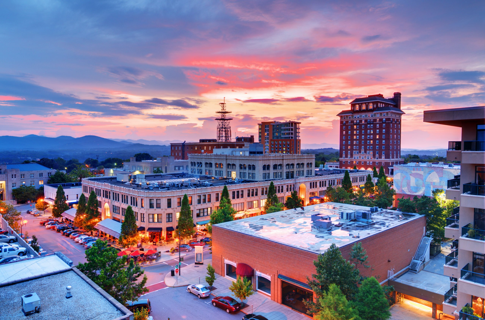
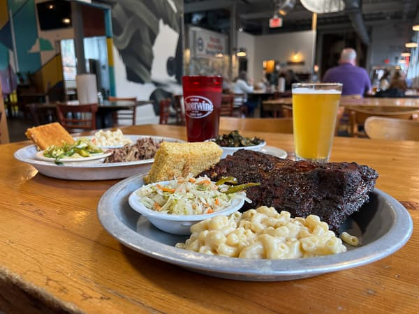
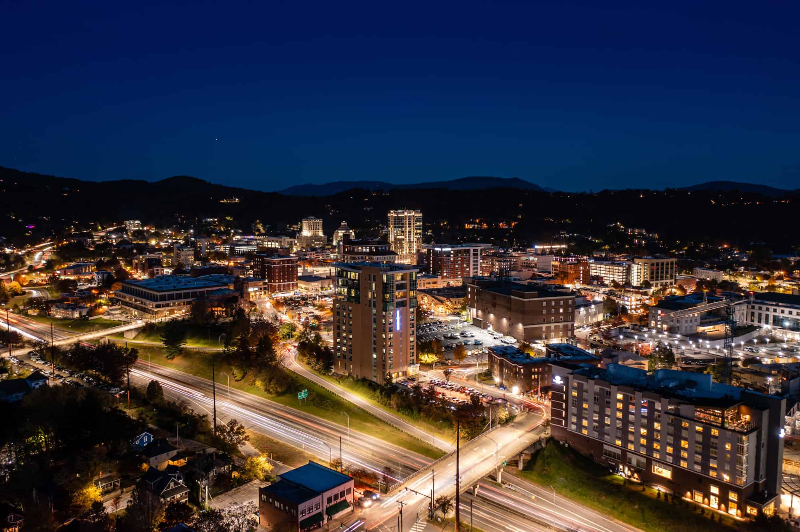
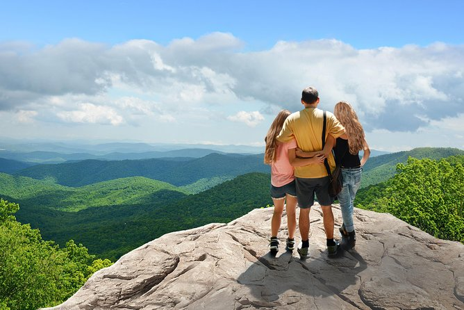
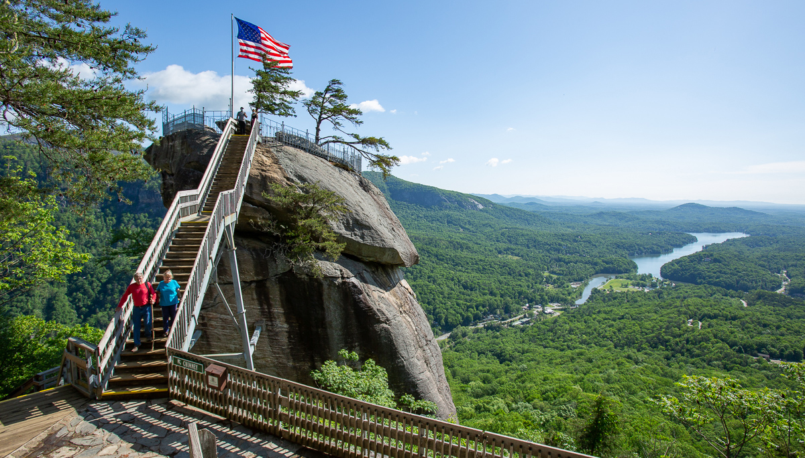

Mountain Views
Enjoy sweeping vistas along the Blue Ridge Parkway, hike to waterfalls, and watch the sunset over the mountains.

A simple 3-day itinerary to explore Asheville, the Blue Ridge Parkway, and nearby mountain towns— all within easy driving distance.
View 3-Day ItineraryNorth Carolina offers a diverse range of experiences, from scenic mountain overlooks to charming small towns and vibrant cities. This weekend guide focuses on Western North Carolina, with short drives between Asheville, the Blue Ridge Parkway, Chimney Rock, and Lake Lure.
Enjoy sweeping vistas along the Blue Ridge Parkway, hike to waterfalls, and watch the sunset over the mountains.
Explore downtown Asheville’s local shops, art galleries, and street performers in the heart of the mountains.
Taste Southern comfort food, farm-to-table restaurants, and award-winning breweries throughout Asheville and nearby towns.
Stroll through historic streets, local boutiques, street art, and live music—perfect for your first evening in the mountains.
Take a scenic drive just outside Asheville and stop at overlooks for panoramic mountain views, especially near Craggy Gardens.
Hike to waterfalls like Looking Glass Falls or Moore Cove Falls, all within a reasonable drive from Asheville.

Climb to the top of Chimney Rock for sweeping views, then relax by the water at Lake Lure—about an hour from Asheville.
Choose a stay to see details for a cozy weekend in the North Carolina mountains.
Stay steps away from Asheville’s restaurants, local shops, and live music venues. This modern loft is perfect if you want to explore the city on foot and take short drives to the Blue Ridge Parkway during the day.
Imagine you’re driving the Blue Ridge Parkway for the day. A park ranger secretly picked an overlook number between 1 and 10 where the sunset will be the best. Guess which overlook they chose and see if your mountain instincts are on point.
Tip: Use this as a fun way to decide how many stops you’ll make on your real drive
every “wrong” guess is just an excuse to see another view.
Here are a few ideas to help you plan where to eat during your stay in Western North Carolina.
Send a message if you’d like help tailoring this itinerary to your North Carolina trip.